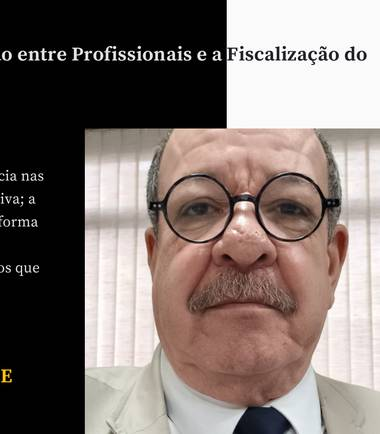

Garantir a segurança, a ética e a excelência nas técnicas radiológicas é uma missão coletiva; a fiscalização eficiente não se constrói de forma isolada, mas sim por meio de uma forte proximidade com os técnicos e tecnólogos que atuam na linha de frente da saúde.
É fundamental desmistificar o papel do Conselho no dia a dia das instituições. Nossos agentes fiscais não possuem uma função puramente punitiva; pelo contrário, eles atuam essencialmente como orientadores. Cada visita técnica é uma oportunidade de esclarecer dúvidas, alinhar condutas conforme a legislação vigente e garantir que o profissional trabalhe em condições seguras e respaldadas legalmente.

Quando o profissional se aproxima do CRTR-SP e enxerga o fiscal como um aliado, fortalecemos toda a categoria. Essa sinergia protege o trabalhador contra a precarização e o exercício ilegal da profissão, além de assegurar que a sociedade receba um atendimento seguro e de alta qualidade.